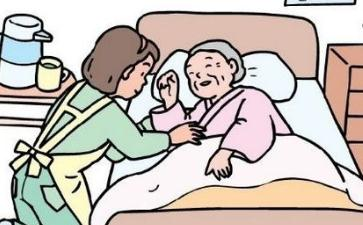

傅冲老师（著名演员、
傅冲：……上次我和胡小林老师看完希海大哥的汇报以后，胡老师他是泣不成声，他就说：“惭愧末学，连己之痰都不能吸的人，何况父母的痰。”…………当时我也在场，胡小林老师是泣不成声，我们在低下也是哭的泣不成声，因为真的都是忏悔的眼泪。然后回去以后呢，胡小林老师就给我们每一个老师转发了一条信息，让我们每天都要警醒自己，学习王希海大哥，进入到学习王希海大哥的三昧当中。……
2011中国十大孝子提名：王希海
【提要】王希海用26年的时间无微不至的照顾植物人父亲，为了父亲一直未娶。2006年父亲去世后，王希海开始做义工回报好心人。他经常到处
1980年，王希海的父亲因脑出血成了植物人。母亲体弱多病，弟弟又患有先天性肢体残疾，不能就业，全家的重担都落在了当时仅有23岁的王希海的肩上。面对这样的情况，王希海先是毅然放弃了去马来西亚工作的机会，后来又向单位请了长假，直至最后下岗失业，25年来一直照顾
王希海有两个哥哥和一个姐姐。王希海看到哥哥姐姐都已经成家，家里也挺困难，就主动肩负起照顾父亲的责任。为了防止父亲得褥疮，他每天都会每隔半个小时就给父亲翻一次身，白天还要把父亲扶到轮椅上坐半小时到1小时，而且还要给父亲按摩、敲背五六遍。为了让父亲躺得舒服，他用8个枕头垫在后背、腿下等不同部位。
王希海一直要照顾父亲到半夜12点半以后，后半夜由母亲替换。此外，王希海一天还要洗两大盆衣服或床单等衣物。母亲心疼儿子，让儿子去工作，自己照顾老伴，可儿子说：“你可不能倒了，要那样，两个人我也伺候不过来呀。”
为了照顾父亲，他放弃了工作和个人
王希海年轻时最大的心愿是当一名船员，但为了父亲不得不放弃了。他说：“父亲的病我治不了，但在生活上、精神上给他安慰、照顾，却是我能做到的。只要父亲活着，我就感到高兴，感到幸福。”
1.“当年父亲的粗茶淡饭，将我养大，只要老父亲在世一天，我就要让他享一天福！”王希海每天要给父亲喂6顿饭。
2.坐在轮椅上的父亲总抬不起头，王希海用柔软的毛巾套住父亲的额头，用自制的喷壶给父亲清洁口腔。
3.老父亲半个小时翻一次身，王希海缝制的12个枕头也随着父亲的身体垫在不同的位置。
4.这根胶皮管救了父亲的命，每当听到父亲的嗓子里有痰的声音，王希海就把
5.听收音机是父亲的最大嗜好。24年来，尽管父亲没有任何表情，可王希海依然每天为父亲播放。
6.1月9日21时，被授予“全国孝亲敬老之星”的王希海从北京归来。
7.王希海家住的是没有暖气的老式房子，狭窄的走廊里摆满了烧柴。
【王希海：天下老人都是我的父母】
大连孝子王希海20多年如一日照顾生活不能自理的植物人父亲的故事曾感动了成千上万人，晚上21:00多，王希海受组委会邀请走上“全国企业家论坛”的讲台，便给讲台上的
王希海说自己曾被邀请到一颗大学讲护理，他拒绝了。在场观众问是不是因为“你是用心来护理，而不是技巧”时候，这位朴实的东北汉子简单地回答“是的”。
“老吾老以及人之老”，王希海不但精心地照顾父亲，还给周围的老人做护理，为小区老人搓澡后，老人变得“脸色红润，走路都晃”，王希海说“天下的老人都是我的父母。”
仍然单身的王希海被问到对自己的伴侣有什么要求时，这位憨厚的汉子说：
《大连孝子24年只为父亲活着》后续报道 王希海：老吾老以及人之老
大连孝子24年只为父亲活着》后续报道王希海：老吾老以及人之老本报记者卢真珍 本报讯10月5日和6日，本报连续报道了《大连孝子24年只为父亲活着》和《大连孝子网上感动万千读者》两篇文章，在社会上引起巨大反响。
昨天，一位曾和王希海在同一家医院待过的病人家属给本报打来电话，他说王希海在医院经常帮助别人，并用自身做法向大家诠释何为孝道。
昨天，记者再次来到王希海家，和他聊起在医院的情况，王希海说：“这些年来我记不清有多少时间是在医院里陪着老父亲度过的。在老人的病床前，我看到了许多种类型的子女，他们中有些人的表现让我寒心。可能是我伺候父亲时间长了，看到别的老人有要求我也总愿帮忙。”
有一次，王希海看到和父亲同病房的
还有一次，王希海看到旁边病床上的老人身体状况非常不好，老人的儿子就在旁边伺候，但可能也知道老人时日无多，看到走廊里有家属在打扑克，他就和那些人一起玩，并叫王希海也过来“凑把手”。这把王希海气坏了，严词拒绝了他。看到老人孤零零地躺在床上，王希海不忍心，就像照顾自己父亲一样去照顾那位老人。
几天下来，老人见到自己儿子过来时没有任何表示，但看到王希海走过来，眼睛总会动一下，王希海明白，那是老人高兴的表情。 王希海感慨地说：“我越是看多了这种让人寒心的事情，我就越要照顾好自己的老父亲，我就不信社会良心还能没有了？”